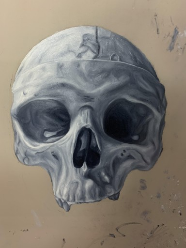
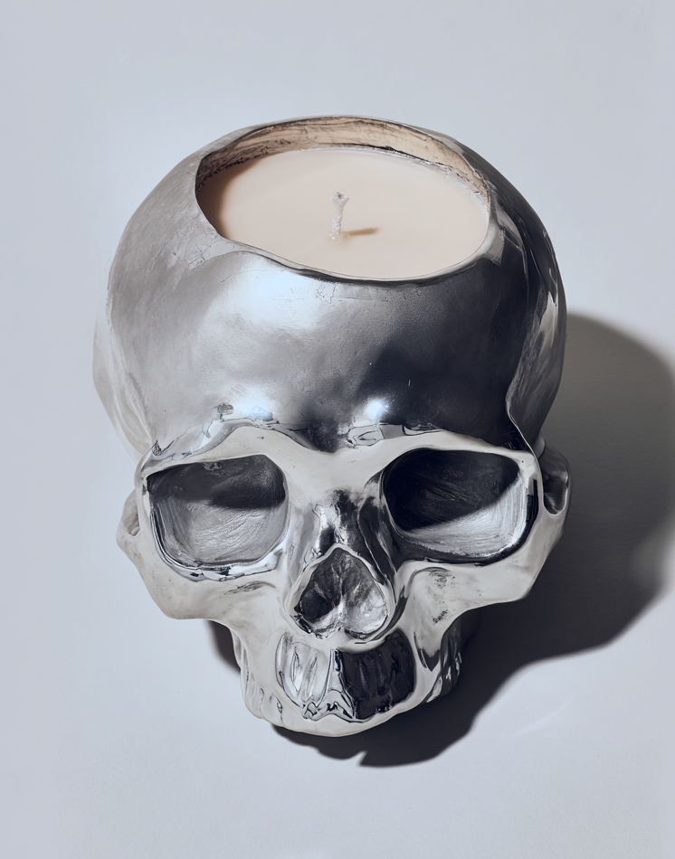
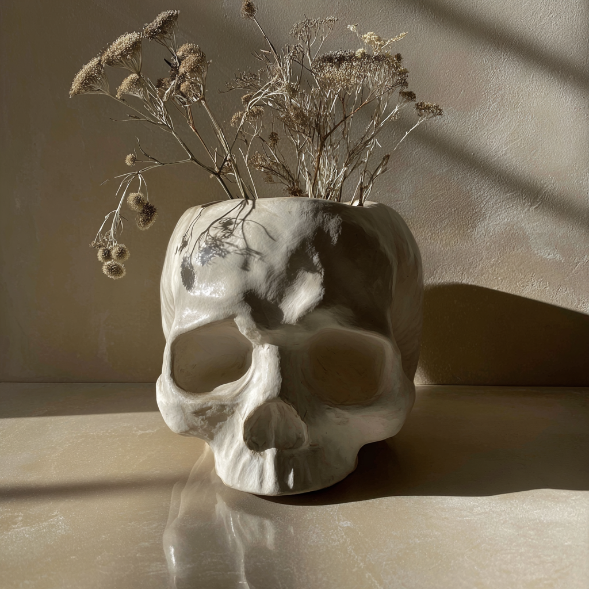

Using an oil skull painting as the foundation, exploring what survives when your own work is handed to a generative algorithm — and what it becomes.
Having developed a personal passion for both fine art and, more recently, generative image-making, I became curious whether I could find ways in which to combine the two. Rather than prompting from scratch, I wanted to see what would happen if I included a painting of my own in the process - using a skull I'd painted in oil as the foundation, and asking Midjourney to translate its texture, anatomy, and mood into real, tangible objects. Getting to these two final products took many failed attempts, prompt adjustments, and the occasional happy accident.

The idea was that by grounding the AI in a painting I'd actually made, something of its character might carry over: the weight of the brushwork, the texture of the paint surface, the particular anatomy of the skull I'd spent time studying and rendering.
I chose this painting specifically because it felt like a strong visual foundation for product design. The skull form naturally suggests vessel-like objects, and the monochrome palette felt transferable to materials like chrome and ceramic. I wanted to see how much of what I'd put into the painting could survive being handed to an algorithm and translated into something entirely different — but still inspired by it.
I wasn't interested in generating something from nothing. I wanted to use AI as an additional tool — a way to take something I'd already made and explore what else it could become, while keeping my own work at the centre of it.
I had been actively learning Midjourney through taking courses, and this project became a way to test what I'd learned, and to push it somewhere more personal than a standard prompt.

The final result maintains the skull's anatomy from the original painting — the cranial dome, deep eye sockets and jaw structure all carry through. The chrome surface picks up a subtle paint-like texture rather than reading as perfectly smooth, echoing the deliberate marks of the brushwork.

The ceramic form closely follows the skull's anatomy as painted — the proportions, the eye cavities, the organic irregularity of the bone structure. The matte glaze retains a slight roughness that nods to the texture of the original brushwork, rather than a glossy finish.
Overcomplicating prompts often confused the algorithm, producing unexpected or unwanted results. Simpler, clearer language consistently performed better.
Getting --iw right was critical. Too high and the output didn't read as a product; too low and the texture and anatomy were lost entirely. Finding the right balance was key to translating my work into a product.
The style reference image had a dramatic impact on the result. The wrong reference could push the output into completely abstract territory, while the right one brought it much closer to the desired feel.
Getting to the final results took many more iterations than documented here. Patience and a willingness to experiment was as important as any prompt technique.
Behind the scenes — iteration process